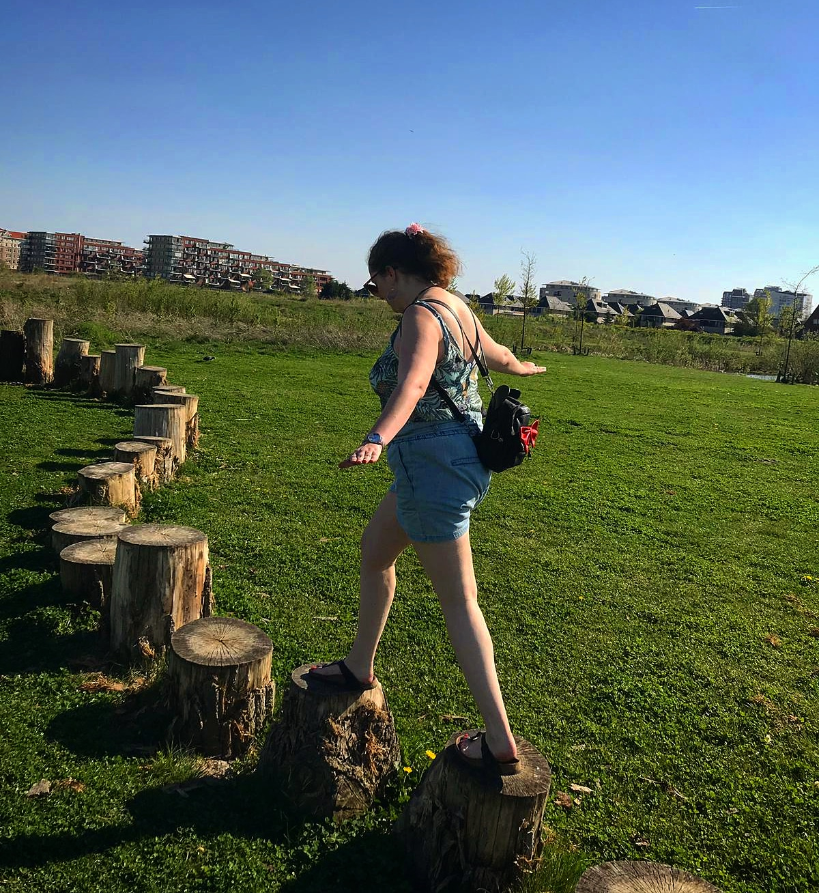
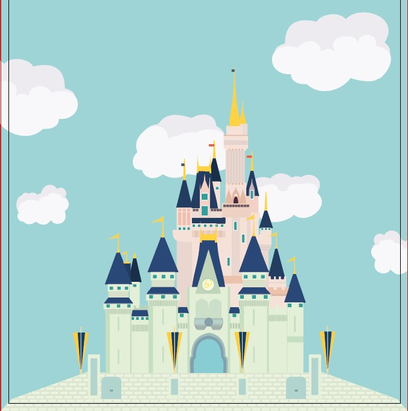

I am a very creative, colourful and spontanious person. This creates me being a good information and inspiration source. I often come up with ideas and love creating projects.

Personal Goals
When I started on this school I already had some experience in working in groups. What I notice is that my personal goals and performance are like stepping stones. Sometimes you need to step higher and farther to make to the other side. But even if you fall, you can climb up again.

Furture Plans
My future plans are that I really want to work at disney. I do not really mind where, but I would love to just live and experience the magic. That is why I want to try to get my workplacement there.